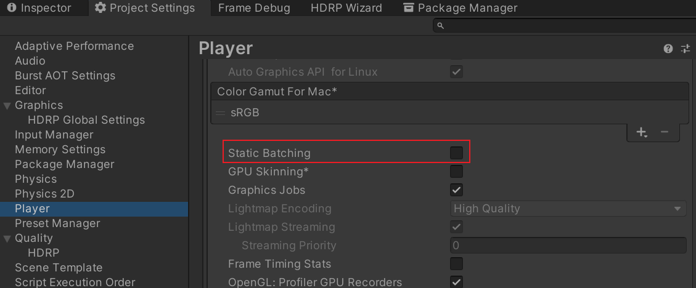

Unity Raytracing
HDRP
setup
requirements
硬件需要支持 Ray Tracing。使用 API SystemInfo.supportsRayTracing 可以查询当前系统是否支持。
auto setup
- 安装 HDRP package
- 打开 HDRP 设置向导 Window/Rendering/HDRP Wizard, 如果有设置错误，直接点击 FixAll
manual setup
enable ray tracing for unity
颜色空间切换到 Linear
Auto GraphicsAPI 取消勾选
切换到 D3D12

禁用 Static Batching

enable ray tracing for hdrp
创建 HDRP HDRenderPipelineGlobalSettings 和 HDRP Render Pipeline Resources Asset

配置 HDRP Render Pipeline Resources Asset 和 HDRP Render Pipeline Resources Asset
check
Edit/Rendering/Check Scene Content for HDRP Ray Tracing 执行该命令, 若日志信息中没有报错，则说明 RayTracing 配置正确。
Ray tracing and Meshes
开启 Ray tracing 后， HDRP 会自动为 ray tracing 创建 acceleration structrue. 该结构允许 Unity 实时为场景中 Meshes 计算 ray tracing。
ray tracing 可以以如下几种方式改变场景中 Meshes 的外观：
- 如果 Mesh 的材质没有 HDRenderPipeline tag, HDRP 不会将其加入到 acceleration structrue，也不会为该 mesh 使用任何 ray traced 效果。
- 如果 Mesh 被赋予了一个 Decal Material, HDRP 不会将其加入到 acceleration structrue，该 mesh 将不会出现在场景中。
- 如果 Mesh 包含一组材质，其中有的材质为单面，有的为双面，HDRP 会将所有这些材质标记为双面。
Ray tracing light culling
Ray tracing 要求 HDRP 以不同的于光栅化的方式对 lights 进行 cull。对于光栅化，只有影响当前 frustum 的光源是有用的。然而，ray tracing 会使用屏幕外的数据来实现各种效果(如 反射)，HDRP 需要考虑影响屏幕外几何体的光源。因此，HDRP 定义了一个围绕 camera 的范围，在该范围内收集光源，可以使用 LightClusterVolume override 来控制该范围。精确设置该范围非常重要，范围过大会使 HDRP 包含更远的光源，会导致 ray tracing 的 light culling 性能问题。
Ray tracing mode
HDRP 包含了两种 ray trcing 模式，其定义了如何计算特定的 ray-traced 效果：
- Performance 该模式用于实时应用程序。如果你选择该模式，ray-traced effects 会包含预设，你可以改变预设来平衡性能和质量。
- Quality 该模式用于技术 demo 和那些希望获得最佳质量的应用程序。
根据当前使用的不同的 ray tracing 模式，HDRP 会为一些 ray-traced effects 暴露不同的属性。你可以在 project level 也可以在 effect level 上来改变 ray tracing 模式。
在 HDRP Asset 中可以在 Project Level 上，改变 ray tracing 模式，如下：

如果选择 Both 选项，你可以为每种 ray-traced effect 改变 ray tracing mode.
在场景中，找到包含 Volume 组件的物体，Volume 若包含了 ray-traced effect, 你可以修改该 effect 的 mode 属性来修改 ray tracing mode, 如下：

Limitations
HDRP ray tracing 有如下限制：
- 不支持顶点动画(vertex animation)
- 不支持贴花(decals)
- 不支持体积雾(volumetric fog)
- 不支持细分着色器(tessellation)
- 不支持 per pixel displacement (parallax occlusion mapping, height map, depth offset).
- 不支持 VFX 和 Terrain
- 不支持对 shadows 进行精确的 culling，ray tracing 实现的效果可能会丢失阴影
- 不支持 MSAA
- 不支持 Graphics.DrawMesh.
- 渲染 Reflection Probes 时，不支持 Ray tracing。
- 不支持正交投影。开启正交投影，半透明材质渲染、体积渲染、平面反射渲染可能会有问题。
- Ray Traced 效果 和 屏幕空间效果不会递归地出现。例如，在 ray-traced 反射中无法看到屏幕空间的全局光照。
implementation
初始化
// com.unity.render-pipelines.high-definition@12.1.6\Runtime\RenderPipeline\HDRenderPipeline.cs public HDRenderPipeline(HDRenderPipelineAsset asset) { // ....... if (m_RayTracingSupported) { InitRayTracingManager(); InitRayTracedReflections(); InitRayTracedIndirectDiffuse(); InitRaytracingDeferred(); InitRecursiveRenderer(); InitPathTracing(m_RenderGraph); InitRayTracingAmbientOcclusion(); } }
internal void InitRayTracingManager() { // RayCountManager 用于管理射线的数量。不同的效果，可以使用不同数量的射线， // Tips: 该功能目前还没有生效 m_RayCountManager = new RayCountManager(); m_RayCountManager.Init(m_GlobalSettings.renderPipelineRayTracingResources); // Ray Tracing Light Cluster // HDRP使用LightCluster 存储每个光源影响的区域范围 // TODO m_RayTracingLightCluster = new HDRaytracingLightCluster(); m_RayTracingLightCluster.Initialize(this); }
// com.unity.render-pipelines.high-definition@12.1.6\Runtime\RenderPipeline\Raytracing\HDRenderPipeline.RaytracingReflection.cs //在 RayTracedReflection 的初始化中，定义好 RayTracing 需要使用的 shader 变量 void InitRayTracedReflections() { ComputeShader reflectionShaderCS = m_GlobalSettings.renderPipelineRayTracingResources.reflectionRaytracingCS; ComputeShader reflectionBilateralFilterCS = m_GlobalSettings.renderPipelineRayTracingResources.reflectionBilateralFilterCS; m_RaytracingReflectionsFullResKernel = reflectionShaderCS.FindKernel("RaytracingReflectionsFullRes"); m_RaytracingReflectionsHalfResKernel = reflectionShaderCS.FindKernel("RaytracingReflectionsHalfRes"); m_RaytracingReflectionsTransparentFullResKernel = reflectionShaderCS.FindKernel("RaytracingReflectionsTransparentFullRes"); m_RaytracingReflectionsTransparentHalfResKernel = reflectionShaderCS.FindKernel("RaytracingReflectionsTransparentHalfRes"); m_ReflectionAdjustWeightKernel = reflectionBilateralFilterCS.FindKernel("ReflectionAdjustWeight"); m_ReflectionUpscaleKernel = reflectionBilateralFilterCS.FindKernel("ReflectionUpscale"); }
renderPipelineRayTracingResources 数据存储在如下路径文件中：
Render
Main
// com.unity.render-pipelines.high-definition@12.1.6\Runtime\RenderPipeline\HDRenderPipeline.cs protected override void Render(ScriptableRenderContext renderContext, List<Camera> cameras) { // culling loop static bool TryCull(Camera camera, HDCamera hdCamera, ScriptableRenderContext renderContext, SkyManager skyManager, ScriptableCullingParameters cullingParams, HDRenderPipelineAsset hdrp, ref HDCullingResults cullingResults) { // 开启 ray tracing 后会对Culling参数进行重写 static void OverrideCullingForRayTracing(HDCamera hdCamera, Camera camera, ref ScriptableCullingParameters cullingParams) } // add render request // add HDProbeRenderRequests // execute render request ExecuteRenderRequest(renderRequest, renderContext, cmd, AOVRequestData.defaultAOVRequestDataNonAlloc); { // 为 ray tracing 构建加速结构 BuildRayTracingAccelerationStructure(hdCamera); // 为 ray tracing 执行culling TODO CullForRayTracing(cmd, hdCamera); // PrepareLightsForGPU(cmd, hdCamera, cullingResults, hdProbeCullingResults, localVolumetricFog, m_CurrentDebugDisplaySettings, aovRequest); // 更新 constant buffers UpdateGlobalConstantBuffers(hdCamera, cmd); // 构建 light data BuildRayTracingLightData(cmd, hdCamera, m_CurrentDebugDisplaySettings); // 配置Keywords ConfigureKeywords(enableBakeShadowMask, hdCamera, cmd); // 执行 RenderGraph ExecuteWithRenderGraph(renderRequest, aovRequest, aovBuffers, aovCustomPassBuffers, renderContext, cmd); { // com.unity.render-pipelines.high-definition@12.1.6\Runtime\RenderPipeline\HDRenderPipeline.RenderGraph.cs RecordRenderGraph() { // prepass RenderPrepass(m_RenderGraph, colorBuffer, lightingBuffers.sssBuffer, vtFeedbackBuffer, cullingResults, customPassCullingResults, hdCamera, aovRequest, aovBuffers); // ao RenderAmbientOcclusion(m_RenderGraph, hdCamera, prepassOutput.depthPyramidTexture, prepassOutput.resolvedNormalBuffer, prepassOutput.resolvedMotionVectorsBuffer, historyValidationTexture, hdCamera.depthBufferMipChainInfo, m_ShaderVariablesRayTracingCB, rayCountTexture); // shadows RenderShadows(m_RenderGraph, hdCamera, cullingResults, ref shadowResult); // render ssr RenderSSR(m_RenderGraph, hdCamera, ref prepassOutput, clearCoatMask, rayCountTexture, m_SkyManager.GetSkyReflection(hdCamera), transparent: false); // ssgi RenderScreenSpaceIndirectDiffuse(hdCamera, prepassOutput, rayCountTexture, historyValidationTexture, gpuLightListOutput.lightList); // screen space shadows RenderScreenSpaceShadows(m_RenderGraph, hdCamera, prepassOutput, prepassOutput.depthBuffer, prepassOutput.normalBuffer, prepassOutput.motionVectorsBuffer, historyValidationTexture, rayCountTexture); // volumetric lighting VolumetricLightingPass(m_RenderGraph, hdCamera, prepassOutput.depthPyramidTexture, volumetricDensityBuffer, maxZMask, gpuLightListOutput.bigTileLightList, shadowResult); // deferred lighting RenderDeferredLighting(m_RenderGraph, hdCamera, colorBuffer, prepassOutput.depthBuffer, prepassOutput.depthPyramidTexture, lightingBuffers, prepassOutput.gbuffer, shadowResult, gpuLightListOutput); // forward opaque RenderForwardOpaque(m_RenderGraph, hdCamera, colorBuffer, lightingBuffers, gpuLightListOutput, prepassOutput.depthBuffer, vtFeedbackBuffer, shadowResult, prepassOutput.dbuffer, cullingResults); // sss RenderSubsurfaceScattering(m_RenderGraph, hdCamera, colorBuffer, historyValidationTexture, ref lightingBuffers, ref prepassOutput); // sky RenderSky(m_RenderGraph, hdCamera, colorBuffer, volumetricLighting, prepassOutput.depthBuffer, msaa ? prepassOutput.depthAsColor : prepassOutput.depthPyramidTexture); // volumetric clouds RenderVolumetricClouds(m_RenderGraph, hdCamera, colorBuffer, prepassOutput.depthPyramidTexture, prepassOutput.motionVectorsBuffer, volumetricLighting, maxZMask); // transparency RenderTransparency(m_RenderGraph, hdCamera, colorBuffer, prepassOutput.resolvedNormalBuffer, vtFeedbackBuffer, currentColorPyramid, volumetricLighting, rayCountTexture, m_SkyManager.GetSkyReflection(hdCamera), gpuLightListOutput, ref prepassOutput, shadowResult, cullingResults, customPassCullingResults, aovRequest, aovCustomPassBuffers); // distortion RenderDistortion(m_RenderGraph, hdCamera, colorBuffer, prepassOutput.resolvedDepthBuffer, currentColorPyramid, distortionBuffer, distortionRendererList); } } } }
// com.unity.render-pipelines.high-definition@12.1.6\Runtime\RenderPipeline\Raytracing\HDRaytracingManager.cs internal void BuildRayTracingAccelerationStructure(HDCamera hdCamera) { // 获取场景中所有的灯光 fetch all the lights in the scene // 1. 判断灯光是否开启ray tracing shadow，并且是否开启了屏幕空间阴影 // m_RayTracedShadowsRequired |= (hdLight.useRayTracedShadows && screenSpaceShadowsSupported); // m_RayTracedContactShadowsRequired |= (hdLight.useContactShadow.@override && hdLight.rayTraceContactShadow); // 2. 判断灯光是否有位置变化。TODO // Tips: ReflectionProbe 也被当作RayTracing 的光源 // 判断下列各种效果的设置中是否开启了RayTracing // AmbientOcclusion 开启了 rayTracing，并且camera开启了ScreenSpaceAO // ScreenSpaceReflection 自身开启了或开了半透明物体的反射，并且开启了 rayTracing，并且camera开启了 ssr // GlobalIllumination 自身开启了，并且开启了 rayTracing, 并且 camera 开启了SSGI // RecursiveRendering 自身开启了 // SubSurfaceScattering 开启了 rayTracing，并且camera开启了 SubsurfaceScattering // PathTracing 自身开启了 // 以上任何一个效果开启，就表示需要进行 Ray Tracing了 // 遍历场景中所有区域光源, 为其生成Acceleration Structure // 遍历场景中所有LODGroup，根据摄像机距离获得当前使用的Lod，为对应的MeshRenderer 生成Acceleration Structure // 遍历场景中所有 Renderer, 若还没有为其生成 Acceleration Structure 则为其生成 // RayTracingAccelerationStructure m_CurrentRAS; // 该变量用于存储 Acceleration Structure // AddInstanceToRAS() 函数用于执行具体生成Acceleration Structure 的逻辑 TODO // 构建GPU 端的加速结构数据 m_CurrentRAS.Build(hdCamera.mainViewConstants.worldSpaceCameraPos); }
Raytracing reflection
Raytracing Reflection csharp 端处理流程
// Raytracing Reflection csharp 端处理流程 // com.unity.render-pipelines.high-definition@12.1.6\Runtime\RenderPipeline\HDRenderPipeline.LightLoop.cs RenderSSR() { // com.unity.render-pipelines.high-definition@12.1.6\Runtime\RenderPipeline\Raytracing\HDRenderPipeline.RaytracingReflection.cs RenderRayTracedReflections() { RenderReflectionsQuality() { // raytracing reflection QualityRTR(); { DispatchRays(RayTracingShader rayTracingShader, string rayGenName, uint width, uint height, uint depth, Camera camera = null); } // Tips: 只有不是半透明时才可以进行降噪 DenoiseReflection(); } } }
Raytracing Reflection GPU 端处理流程
// Raytracing Reflection GPU端处理流程 // 提交给 gpu 的 raytrace shader 分为两部分： // 1. com.unity.render-pipelines.high-definition@12.1.6\Runtime\RenderPipeline\Raytracing\Shaders\Reflections\RaytracingReflections.raytrace // 2. HDRP Lit.shader IndirectDXR Pass // HDRP Lit.shader --> com.unity.render-pipelines.high-definition@12.1.6\Runtime\RenderPipeline\ShaderPass\ShaderPassRaytracingIndirect.hlsl [shader("raygeneration")] void RayGenIntegration() { // 计算当前射线对应的像素 // 读取DepthTexture 计算当前像素的深度值 // 若 深度 为远平面depth值，则不生成射线 // 读取 StecilTexture 计算当前像素的 Stecil 值 // 若 Stecil 值不包含SSRStecilBit 标记位，则不生成射线 // 读取 NormalBuffer, 从中解码 roughness值 // 若roughness值大于设定的临界值，则不生成射线 // 计算采样数量（也就是发射射线数量）。如果粗糙度很低，则一个样本足够 // 根据当前像素坐标生成样本坐标 （生成样本算法利用了 SIGGRAPH 2019 年 A Low-Discrepancy Sampler that ...） // 对GGX brdf 进行重要性采样，得到反射方向 // 若反射方向指向物体内，则不生成射线 // 构造 RayDesc 结构体 描述生成射线的信息（原点，方向，min，max） // 构造 RayIntersection 结构体 （用于传递信息到下一个阶段） // 发射射线 TraceRay(_RaytracingAccelerationStructure, RAY_FLAG_CULL_BACK_FACING_TRIANGLES, RAYTRACINGRENDERERFLAG_REFLECTION, 0, 1, 0, rayDescriptor, rayIntersection); // 将计算的颜色写入 _SsrLightingTextureRW[COORD_TEXTURE2D_X(currentCoord)] = float4(finalColor, weightValue); } [shader("miss")] void MissShaderReflections(inout RayIntersection rayIntersection : SV_RayPayload) { // 反射射线没有碰到物体 // 若是碰到了反射球，则对反射球进行采样 // 若是碰到了天空盒，则对天空盒进行采样 // 叠加雾效 // 将射线长度设置为最大 rayIntersection.t = _RaytracingRayMaxLength; }
// HDRP Lit.shader // com.unity.render-pipelines.high-definition@12.1.6\Runtime\RenderPipeline\ShaderPass\ShaderPassRaytracingIndirect.hlsl [shader("closesthit")] void ClosestHitMain(inout RayIntersection rayIntersection : SV_RayPayload, AttributeData attributeData : SV_IntersectionAttributes) { // 执行渲染 } [shader("anyhit")] void AnyHitMain(inout RayIntersection rayIntersection : SV_RayPayload, AttributeData attributeData : SV_IntersectionAttributes) { // 处理AlphaTest逻辑 }
- A Low-Discrepancy Sampler that Distributes Monte Carlo Errors as a Blue Noise in Screen Space https://belcour.github.io/blog/research/publication/2019/06/17/sampling-bluenoise.html
利用 raytracing 生成的结果
Lit.hlsl 中会对 ratracing 生成的贴图进行采样，将其当作一种间接光照来处理
IndirectLighting EvaluateBSDF_ScreenSpaceReflection(PositionInputs posInput, inout PreLightData preLightData, BSDFData bsdfData, inout float reflectionHierarchyWeight) { IndirectLighting lighting; ZERO_INITIALIZE(IndirectLighting, lighting); // TODO: this texture is sparse (mostly black). Can we avoid reading every texel? How about using Hi-S? float4 ssrLighting = LOAD_TEXTURE2D_X(_SsrLightingTexture, posInput.positionSS); InversePreExposeSsrLighting(ssrLighting); // ....... }
URP
setup
enable ray tracing for unity
颜色空间切换到 Linear
Auto GraphicsAPI 取消勾选
切换到 D3D12
禁用 Static Batching
enable ray tracing for urp
在 Projecto 窗口中，鼠标右键创建 RaytracingResourcesAssets，如下：
Raytracing 需要的资源都会放到该文件中（创建 RaytracingResourcesAssets 文件时会自动关联需要的资源），如下：
urp raytracing 通过 RenderFeature 来实现，需要在 URP Renderer 中添加 RaytracingFeature 来开启，同时手动将上一步创建的 RaytracingResourcesAssets 赋给 Res，如下:
Tips:
- 如果 RaytracingResourcesAssets 文件中的资源是空的，可以重命名 RaytracingResourcesAssets 文件, 以重新执行一次资源自动关联。
implementation
概述
| cs 文件名 | 功能概述 |
|---|---|
| RaytracingFeature.cs | 为 Raytracing 和 URP 交互的接口，一些 Raytracing 用到的参数也通过 RaytracingFeature 来配置。 |
| RaytracingMangager.cs | 主要执行 Raytracing 公共的一些逻辑。如：加速结构构建。 |
| RaytracingResources.cs | 用于管理 Raytracing 使用的资源（如 shader texture 等） |
| RaytracingStringConstants.cs | 用于管理 String 常量 |
| RaytracingXXXX.cs | 用于实现特定 Raytracing 效果。如 RaytracingReflection |
初始化
RaytracingFeature 包含两个 Pass： RaytracingRenderPass 用于执行 Raytracing 渲染，RaytracingRenderEndPass 用于执行清理工作。
RaytracingRenderPass 的 Setup 函数用于执行开启 Raytracing 的初始化，Config 函数用于执行每一帧的配置工作，Execute 函数用于执行渲染，FrameCleanup 执行渲染完毕后的清理工作。
RaytracingReflection 会使用屏幕空间的 Depth 和 Normal，就是在 RatracingFeatrue::RaytracingRenderPass 的 Setup 中进行配置的。
Render
开始渲染时，会先通过 RaytracingManager::BuildRayTracingAccelerationStructure 构建加速结构。
然后，在 RaytracingReflection::Render 中会将渲染需要的数据提交给 GPU，并向 GPU 发起 Raytracing 请求。
Raytracing Shader
raytracing shader 实现分为两部分：
- 在特定的 raytracing shader 中实现 RayGeneration (射线发射函数) MissHit(射线未碰到任何物体的处理函数)
- 在物体的 shader 中增加 raytracing pass, 其中实现 ClosestHit (射线碰到最近物体的处理函数)
// 第一部分： simple.raytrace RaytracingAccelerationStructure _RaytracingAccelerationStructure: register(t0); RWTexture2D<float4> _OutRW; #include "Packages/com.unity.render-pipelines.core/ShaderLibrary/Common.hlsl" #include "Packages/com.unity.render-pipelines.core/ShaderLibrary/Color.hlsl" #include "Packages/com.unity.render-pipelines.core/ShaderLibrary/BSDF.hlsl" #include "Packages/com.unity.render-pipelines.universal/ShaderLibrary/Input.hlsl" #include "Packages/com.unity.render-pipelines.universal/ShaderLibrary/UnityInput.hlsl" #include "Packages/com.unity.render-pipelines.core/ShaderLibrary/SpaceTransforms.hlsl" #include "Packages/com.unity.render-pipelines.core/ShaderLibrary/CommonLighting.hlsl" #include "Packages/com.unity.render-pipelines.core/ShaderLibrary/ImageBasedLighting.hlsl" #include "Packages/com.unity.render-pipelines.high-definition/Runtime/RenderPipeline/Raytracing/Shaders/RaytracingIntersection.hlsl" [shader("raygeneration")] void RayGenIntegration() { // 发射射线的索引 uint3 launchIndex = DispatchRaysIndex(); // 发射射线的范围 uint3 launchDim = DispatchRaysDimensions(); uint2 currentCoord = uint2(launchIndex.x, launchDim.y - launchIndex.y - 1); _OutRW[currentCoord] = float4(0.0, 0.0, 0.0, 0.0); float depthValue = _DepthTexture.Load(int3(currentCoord, 0)).r; float3 normalWS = _CameraNormalsTexture.Load(int3(currentCoord, 0)); PositionInputs posInput = GetPositionInput(currentCoord, 1.0/launchDim.xy, depthValue, UNITY_MATRIX_I_VP, GetWorldToViewMatrix(), 0); RayDesc ray; ray.Origin = _WorldSpaceCameraPos; ray.Direction = normalize(posInput.positionWS - _WorldSpaceCameraPos); ray.TMin = 0; ray.TMax = 100000; RayIntersection payload; // TraceRay 参数解释 // 1 Top Level Acceleration structure // 2 ray flags. 这些 flags 可用于控制遍历行为，如 开启背面剔除 // 3 ray masks. 可用于整体剔除物体 // 4 RayContributionToHitGroupIndex 5 MultiplierForGeometryContributionToHitGroupIndex 用于索引 shader-table // 6 miss-shader index。index 相对于调用 DispatchRays() 传递的 miss-shader index。我们只有1个miss-shader, 因此为0 // 7 RayDesc // 8 用于 raytracing shader 各个阶段之间传递数据, 因此需要保证各个阶段所使用的定义一致 TraceRay( _RaytracingAccelerationStructure, 0 /*rayFlags*/, 0xFF, 0 /* ray index*/, 0, 0 /* miss-shader idx */, ray, payload ); float3 col = payload.color; _OutRW[currentCoord] = float4(col, 1); } [shader("miss")] void MissHit(inout RayIntersection payload) { // 射线未碰到任何物体的处理函数 payload.color = float3(0.5, 0.5, 0.5); } // 当物体的shader中没有提供 closesthit 函数，则使用该候选函数 [shader("closesthit")] void ClosestHit(inout RayIntersection payload, in BuiltInTriangleIntersectionAttributes attribs) { payload.color = float3(0, 1, 0); }
// 第二部分： RTLit.shader Pass { Name "IndirectDXR" Tags{ "LightMode" = "IndirectDXR" } HLSLPROGRAM #pragma only_renderers d3d11 ps5 #pragma raytracing surface_shader #define SHADERPASS SHADERPASS_RAYTRACING_INDIRECT #include "Packages/com.unity.render-pipelines.high-definition/Runtime/RenderPipeline/Raytracing/Shaders/RaytracingIntersection.hlsl" [shader("closesthit")] void ClosestHitMain(inout RayIntersection rayIntersection : SV_RayPayload, AttributeData attributeData : SV_IntersectionAttributes) { rayIntersection.color = float3(1.0, 0.0, 0.0); } ENDHLSL }
Terminology
Light Cluster
HDRP 使用 LightCluster 存储每个光源影响的区域范围。光栅化中，HDRP 为不透明物体使用 tile 结构，为半透明物体使用 cluster 结构。这两种结构的主要不同在于 用于 ray strcing 的 不是基于摄像机视锥体的。
HDRP 为 Raytracing 构建了轴对齐的网格，每个 cell 中，存储光源列表。可以使用 Volume Light Cluster Override 来改变 HDRP 构建该结构的参数, 如下：
Render Graph
参考资料
- GPU Ray Tracing in Unity – Part 1 http://blog.three-eyed-games.com/2018/05/03/gpu-ray-tracing-in-unity-part-1/
- GPU Ray Tracing in Unity – Part 2 http://three-eyed-games.com/2018/05/12/gpu-path-tracing-in-unity-part-2/
- GPU Ray Tracing in Unity - Part 3 http://three-eyed-games.com/2019/03/18/gpu-path-tracing-in-unity-part-3/
- 探究光线追踪技术及 UE4 的实现 https://www.cnblogs.com/timlly/p/11366199.html
- Mesh Sampling in Ray Tracing Shaders https://docs.google.com/document/d/1WxzKz986eRS7pVIQKImSemT55faJh972Lzohfb6rtAA/edit